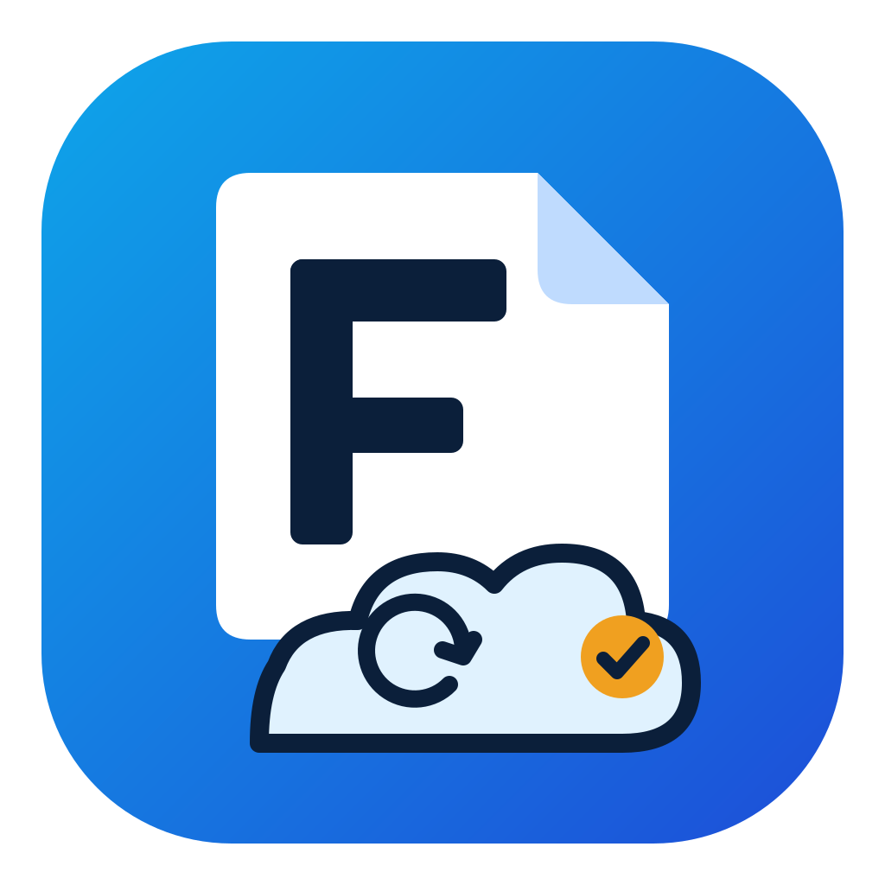

FaqrAi vystaví fakturu za minutu, pohlídá DPH a termíny, připraví podklady k daňovému přiznání a jednou za měsíc pošle účetní všechno v jednom balíku. Program pro Windows a macOS – data zůstávají u vás.
Zkušební verze je plná, bez omezení funkcí. Po 30 dnech stačí zadat licenční klíč, data zůstanou.
| Číslo | Odběratel | Splatnost | Částka | Stav |
|---|---|---|---|---|
| 20260041 | Truhlářství Novák | 28. 11. 2026 | 18 150,00 | Neuhrazeno |
| 20260040 | Kavárna U Mostu | 14. 11. 2026 | 6 050,00 | Po splatnosti |
| 20260039 | Studio Pixel s.r.o. | 10. 11. 2026 | 42 350,00 | Uhrazeno |
| ZF20260012 | Obec Lhota | 5. 11. 2026 | 12 100,00 | Uhrazeno – vyúčtovat |
| 20260038 | Jan Dvořák | 2. 11. 2026 | 3 300,00 | Uhrazeno |
Vyberte podle toho, jak podnikáte. Oba sdílejí stejné jádro, stejný vzhled a stejné aktualizace.
Pro OSVČ – hlavní i vedlejší činnost, paušální výdaje.
Pro malé firmy a plátce DPH – víc lidí, víc dokladů.
Jeden ZIP za měsíc nebo rok: PDF všech faktur, ISDOC, CSV přehledy, přílohy přijatých dokladů. Rovnou do e-mailu účetní.
Vyfoťte nebo naskenujte doklad – program přečte dodavatele, částku, DIČ a datum. Funguje offline, nic neodchází na internet.
Zadejte IČO, zbytek se doplní z registru. Ověření DIČ v registru plátců a VIES.
Po splatnosti, zákonný úrok z prodlení, upomínky, lhůta 15 dnů pro daňový doklad, přiznání a přehledy – vše na úvodní stránce.
Pravidelné faktury se vystaví jedním kliknutím. Ceník našeptává položky, ceny a sazby.
Nahrajte CSV z banky, platby se spárují podle variabilního symbolu a faktury se označí jako uhrazené.
Angličtina, němčina, slovenština. Vlastní logo a barva, reverse charge pro EU.
Jeden soubor ve složce, kterou si zvolíte – klidně v OneDrive, Google Drive nebo iCloudu. Denní zálohy, přenos mezi počítači.
Sazby DPH, limity a parametry daní přicházejí jako podepsané aktualizace. Nová verze programu se nabídne sama.
Licence je na zvolené období nebo neomezená. Aktualizace programu a daňových parametrů jsou v ceně po dobu licence. Placená podpora je volitelná.
Dva nové produkty ve stejné rodině. Zájemcům pošleme zprávu, až budou k dispozici – napište nám.
Podvojné účetnictví pro s.r.o. a spolky.

Stejné programy v prohlížeči a na telefonu.
Vyplníte IČO (údaje doplníme z ARES) a vyberete licenci. Pošleme vám fakturu; po zaplacení dostanete e-mailem licenční klíč, který zadáte v programu v sekci Data a zálohy → Licence. Zkušební verzi můžete používat mezitím – data zůstanou.
FaqrAi Simple je osobní licence – používejte ji na svých počítačích (Windows i Mac). FaqrAi se prodává na počet zařízení; zařízení můžete v programu spravovat a přidělovat role.
Program přejde do režimu jen pro čtení: evidenci můžete dál prohlížet, tisknout a exportovat, jen nejde nic nového uložit. Po prodloužení pokračujete, kde jste skončili.
V jednom souboru ve složce, kterou si zvolíte – na disku nebo ve vašem cloudu. Na naše servery se nic neposílá. Program dělá denní zálohy a umí přenos mezi počítači.
Ne. Hlídá náležitosti dokladů, počítá DPH i podklady k přiznání a připraví balík pro účetní, ale rozhodnutí v daňových otázkách nechte na odborníkovi. Výpočty jsou pomůcka, ne daňové poradenství.
E-mailem, odpovídáme v pracovní dny. Podpora se předplácí na období; bez ní máte k dispozici nápovědu v programu a aktualizace.